スタジオ猫
TRPG Profile & Tools
ハウスルール
当卓（主にクトゥルフ神話TRPG 6版）における基本的なハウスルールです。
基本的にはルルブに準拠しつつ、全員が楽しくドラマチックに遊べるような判定を心がけています。
基本ルール・チケット制
- 秘匿シナリオ時：
他の方のCS（キャラクターシート）はネタバレを含む可能性がありますので、絶対に見ないようにお願いします。
- CFチケット
KPがどうしても処理に困ったり、「ここでクリファンが起こると卓の進行上マズい！」という緊急時に使用します。
- Cチケット
基本的にSANC（正気度ロール）や、あらかじめシナリオ内で回数が明記されている場合を除き、すべてのダイスの振り直しを可能とします。
- Fチケット
基本的にシナリオ終了後、悪いことを溜め込んだ罰として【所持枚数 × 1d3】のSAN値が確定で消失します。
- 総裁ルール：
総裁を動かす、あるいは交渉するためには、CチケットまたはC（クリティカル）を直接差し出す必要があります。
日程調整について（KP依頼時）
私にKP（ゲームマスター）の依頼をする場合は、以下の手順での調整をお願いします。
- まず、PL全員がいるチャンネルにて、私がシナリオに「何時間必要か」を書き出します。
- それを踏まえて、PLの皆様で日程の候補日を出し合ってください。
- 最終的にそこから私が選ぶため、【KPが必要とする時間 ＋ 10時間程度】は、余裕を持って日程を多めに書き出していただけると非常に助かります。
※全員が他の卓で忙しい「卓修羅」でスケジュールが厳しい場合は、無理に日程を出さず「何月ごろを目安に集まるか」の方針だけまず最初にご連絡ください。
CS（キャラクターシート）作成ルール
- 技能の上限：
初期作成・育成を含め、通常の技能上限は 90 までとします。
- 回避の上限値：
回避技能の上限は、一律で《DEX * 5》の値までとします。
- ステータスの振り直し：
全体の能力値をまるごと振り直す回数制限はありません。ただし、特定の低い箇所だけを選んで個別に振り直すことは不可とします。
- ステータスの理由振り：
キャラクターのバックボーンや設定上、理論的な理由がある場合に限り、理由振りを可とします。
- 持ち物について：
KPからの事前確認は特に取りません。ただし、CSに明記されていない持ち物に関しては、「ドンキホーテ等に通常売っているか」の精査、またはその場での《幸運》判定の成功が必要です。
- 探索者の年齢制限：
ルールブック上は《EDU ＋ 6》を年齢の下限最低値としていますが、何かしらの能力値・ロールプレイ上の「デメリット」を受け入れるのであれば、この年齢下限ルールを適用していない（さらに若い）キャラクターでも提出可能とします。
- 特徴表の採用：
シナリオの進行上大きな問題がなく、私が事前に「今回のシナリオは特徴表の使用OKです」と明言していた場合に限り、採用可能です（最大2つまで）。
- 継続探索者の持ち込み：
シナリオの内容や推奨技能のバランスを考慮して許可します。ただし、過去シナリオで手に入れた魔術的道具やアーティファクト等は、基本的に今回のシナリオ内には持ち込めず「自宅に厳重保管している」扱いとなり、使用できません。
特殊な持ち物ルール（救急キット・武器）
- 応急キットの仕様：
セッションに持ち込む際、PLはシナリオ開始前に以下の2つの効果からどちらか任意のものを選択できます。
➔ ① 応急手当技能の判定に ＋30 のプラス補正
➔ ② 成功時に「3」の固定値回復
※非常に強力なため、1回のセッションにつき卓全体での持ち込みは最大2つまでとします。
- 武器の持ち込みについて：
持ち込み自体は可能ですが、現実世界の日常で持ち歩いていて明らかに怪しまれるもの（刃物や銃器等）は、移動時などに《隠す》技能の成功が必要です。
- 空野卓の警察NPC仕様：
当卓に登場する警察はそんじゃそこらの無能警察と違い、基本的に非常に優秀です。武器を所持していて職質をされた場合、ゲーム内の《言いくるめ》技能を成功させるか、プレイヤー自身で納得のいく「リアルな言い訳」を提示する必要があります。
成長ルール
| 初期値成功 |
その場で即時 1d10 の技能成長。それ以降（セッション終了後など）は通常のクリティカル成功と同一の処理を行います。 |
| クリティカル |
シナリオ終了後にまとめて算出。【判定：1d10ロール】
成長ロール成功で1、失敗した場合は 1d5 ポイント成長します。 |
| ファンブル |
シナリオ終了後にまとめて算出。ファンブルを出していた技能の成長判定を行う場合、成長しやすくなるように判定ダイスへ +1 の補正が入ります。 |
HP（耐久力）・負傷・気絶ルール
- 応急手当の回復量： 1d3 回復
- 医学の回復量： 1d4 回復
- 応急手当 ＋ 医学（組み合わせ）： 1d3 ＋ 1d4 回復
- ※注意：《医学》技能は戦闘中、および周囲が危険な警戒態勢時には使用（ダイスロール）ができません。
- 自動気絶ライン： 残りHPが 2 以下になった時点で、探索者は自動的に気絶します。
- ロスト（死亡）ライン： HPが0以下になった場合でも、次のラウンド（手番）内に応急手当などの回復が間に合えば、一命を取り留めて復帰が可能です。
- ショック判定： 一度の攻撃で 5以上 の大きなダメージを負った場合、即座に《CON * 5》ロールを行い、失敗すると気絶します。
発狂・狂気ルール
正気度ロール（SANチェック）でのクリティカル/ファンブル時、および発狂の処理ルールです。
クリティカル時： SAN減少値を最低値（1など）にする
ファンブル時： SAN減少値をそのダイスの最大値にする
※不定の狂気の残り期間の更新は、シナリオ内で1日経過するごとに基本行いますが、過度な緊張状態・戦闘状態が続いている間は日数が経過しても更新されない場合があります。
※セッション中の短期の発狂解除は、精神分析（物理）、通常の精神分析、または心理学-20 での解除ルールを採用しています。
▼ 一時的発狂表 《1D10＋4ラウンド》【クリックで開閉】
- 異常性癖： 狂気的な光景を見すぎて新たな性的趣向に目覚める。性癖対象が近くにある間、あらゆる探索技能に -50 のデバフ。
- 恐怖喪失： 狂気が解除されるまで、SANチェックによるSAN減少が一時的に一切発生しなくなる。その代わり、チェックを跨ぐたびに出た数値分、クトゥルフ神話技能が強制成長する。
- 強迫観念： 異常に行動的になり慎重さを欠く。目に見える危険地帯にまで率先して進んでしまう。【目星】【聞き耳】-50。
- 自己主義： 自分以外の存在に対して極めて冷酷になる。保身のためなら仲間を蹴落とすことも躊躇わなくなる。【信用】-100。
- 短絡的思考： 思考が刹那的になり後先考えなくなる。使ったことがない怪しい道具をすぐ使ったり、謎のボタンを押しに行きたくなる。【アイデア】その他探索技能-10。
- 偏執病： 「周りは全員敵だ」という異常な妄想にとりつかれ、話し方もぎこちなく疑い深くなる。【信用】【説得】【言いくるめ】-50。
- 多弁症： 常に何かを喋り続けないと気が済まなくなる。大半が内容のないうわごとのため、まともな会話が不能になる。【聞き耳】【隠れる】【忍び歩き】-50。
- 感情の喪失： あらゆる感情や興味、知的好奇心が劇的に欠落する。最も愛していた人すらどうでもよく思えてくる。【目星】【図書館】その他知識技能-20。
- 無能： 思考も行動も完全に停止する。他のプレイヤーからの指示がない限り、自発的な全行動・判定を行えなくなる。
- 反響： 他人がしている動作、または発言をそのままオウム返しのように真似する。行う全ての判定に -20 のマイナス補正。
▼ 不定の狂気表 《1d3ヶ月(リアルタイム)》【クリックで開閉】
- 多動症： 何かをしていないと落ち着かなくなる。歩き続けたり同じ動作をループする。行動技能-30。
- 感情の噴出： 感情の起伏が激しくなり、すぐに激昂したり泣き叫んだり笑い転げる。交渉技能-30。
- 異常執着： 特定のアイテムや人物に異常に執着する。その対象が近くにない場合、すべての探索技能に -50 のデバフ。
- 他者依存： 一人でいることが耐えられなくなる。手の届く範囲に人がいないと酷い恐怖に襲われる。傍に誰もいない場合、探索技能-50。
- 孤立願望： すぐ近くに他人がいることに耐えられなくなり、単独行動に走る。同じ空間に他人がいる場合、探索技能-50。
- 健忘症： 自分がなぜここにいるのか一切思い出せなくなる。覚えていた呪文やアーティファクトの使い方もすべて忘却する。知識技能-30。
- 盲目の崇拝： 特定の他人に盲目的に尽くし、その人以外の話を一切聞かなくなる。対象は他探索者からランダム等で決定。
- 狂信的知識欲求： 魔導書やAFに異常に執着し、絶対に他人に渡さず見せようともしなくなる。情報共有が不可能になり、クトゥルフ神話技能に ＋10。
- 異食症： 土、泥、人肉、神話生物の肉などを食べたくて仕方なくなる。奇妙な物を口にする度、HP-2、SAN-1d3の処理。
- 自傷癖： 自分の体を刃物等で傷つけ続ける。止められない限り自傷の度HPを1d3減らし、残り体力が半分以下になるまで続く（治療で回復するとまた再開する）。
GP（キャラシ練頑張ったね賞）について
キャラクターシートのプロフィール・メモを長文で細かく書いてくれた方、または立ち絵をご自身で描いてくれた方へのねぎらいシステムです。
貯まったポイント（P）は、システムにおける「7版の幸運消費」と同じ要領で、「あと少し出目が足りない時の足し」や「ファンブルの回避」のためにダイスの値を消費して補正できます。
※ただし、元々成功しているダイスを決定的成功（クリティカル）にするような使い方は不可。また、シナリオ側で指定されている振り直し不可ダイスや、物語の重大な分岐点では使用できません。己の運を信じてください。
| 自作の立ち絵 |
・自分で描いたメイン立ち絵：1P
・表情差分2枚につき：1P
・戦闘用のポーズ差分：1P |
| 依頼・購入の立ち絵 |
・絵師様に依頼、または購入した立ち絵：1P
・その差分3枚につき：1P |
キャラクターシート
(プロフィールの文字数) |
・500文字以上：1P
・1000文字以上：2P
・5000文字以上：3P
（1万文字以上の場合は要相談） |
※Pはそのセッション（卓）でのみ有効です。継続探索者で新しい立ち絵を用意してきた場合は、新規立ち絵の分のポイントのみが加算されます。使用は任意ですので、必要な時に宣言してください。
戦闘ルール
当卓における戦闘の扱いについて
私自身、大正時代を除いた現代の武器・戦闘知識に乏しいため、戦闘中の行動提案には「具体性」と「論理的な説明」を求めています。
現実の理論で説明がつかないもの、または魔術を用いないと不可能であると判断した提案に関しては却下させていただく場合があります（描写や処理が追いつかないのを防ぐためです）。
逆に、理論的に説明可能で、こちらで処理できると判断した行動に関しては、基本的にかなり柔軟に許可をしています！
ルールブック・サプリで【不採用】としている内容
- 貫通ルール（基本P.36）： 当卓ではスペシャル判定を適用しておらず、ダイス処理の簡略化のため不採用。
- ライフル・ショットガンでの受け流し（2010 P.29）： 受け流しの度に武器の耐久値を確認するのが煩雑な点、およびサプリ記載の「同じラウンドに攻撃不可」の処理を失念しやすいため不採用。
- 武器による命中率の変動（基本P.72）： 同一技能でも武器の種類で命中が変わるルールは、武器知見が少ないため不採用。
- 自動火器の連射ルール（基本P.68）： 命中率の上昇や弾数計算の処理が複雑化するため不採用。
戦闘におけるクリティカル/ファンブルについて
| 出目 |
移動 |
攻撃 |
回避・受け流し |
回復 |
| 1 |
戦闘技能まですべてが自動成功となる。 |
ダメージ二倍
及び 回避不可 |
任意選択
カウンター（通常ダメ）
回避/nの値が1回復 |
6の固定回復
or 1d10の回復 |
| 2〜5 |
即時で戦闘に映れたとしてDEX判定が不要。そのDEX判定でCした場合、戦闘技能が自動成功。 |
ダメージ二倍 回避不可
どちらか一方をダイスで選択する。 |
ダイス選択
カウンター（半ダメ）
回避/nの値が1回復 |
3固定回復
or 1d6の回復 |
| 95〜99 |
その場でつまづいてしまいHP1の減少。 |
1d味方人数でランダム攻撃。2回以上攻撃の場合他攻撃の成功判定を失敗に押し下げる。 |
ダメージ二倍で攻撃を受ける。 |
1d3のダメージ |
| 100 |
その場で盛大にこけてしまい、次の自分のターンまで行動不能。 |
相手からの反撃を喰らう。相手は攻撃判定が必要。 |
ダメージ二倍で受ける。敵がラウンドの最後に二回目の行動をする。 |
3点の固定ダメージ |
行動宣言・戦闘アクション一覧
手番はDEXの高い順に巡ります（同値は1d100の低い方が先行）。自身のターンで以下の行動を宣言できます。
- 通常移動： 5mほどの小移動。移動自体に判定は不要ですが、移動後に攻撃アクションを起こす場合は追加でDEX判定が必要です。
- 全力移動： 10mほどの大きな移動。移動自体の成功にDEX判定が必要です。さらに追加攻撃をする場合、状況に応じた厳しいマイナス補正が判定にかかります。
- 回避・受け流し： 1ラウンド中に何度でも試みることができますが、回数を重ねる（攻撃を連続で避ける）たびに、技能値が /2、/3、/4... と半分、三分の一に減っていきます。
- デュオ（協力）攻撃： 互いのDEX値が同値、もしくは +-2 の差以内の場合のみ宣言可能。具体的な攻撃方法はKPと要相談。
- 防御姿勢： 次の自分のターンが来るまで、回避の元々の値に ＋10 のボーナスを得ます。ただし、そのラウンド中の自身からの攻撃行動は一切行えません。
- 警戒： 次のラウンド開始時に、そのラウンド分の行動権利を持ち越すことができます。また、警戒状態の時に敵から奇襲攻撃を受けた場合、その奇襲へのマイナス補正をかけることが可能です（カウンター準備や防御姿勢との併用は不可）。
- カウンター準備： 次の敵の攻撃を「回避」することに成功した場合、直前まで持っていた武器で即座に反撃を行えます。武器はその場で選べず前ターンで使用していたもの限定となり、反撃のダメージは一律で 1/2 として判定します。
- 陽動（おとり）： 自身が囮となって敵の注意を引き、そのラウンド中の他メンバーの行動にプラス補正を与えます。成功には、規模に応じた倍率補正のかかったDEX判定が必要です。
- 射撃後退： 銃器等で射撃を行いながら後ろへ下がります。これを行った場合、次のターンまでの間、接近してくる相手の近接技能にデバフ（命中低下等）を与えますが、引き換えに自身の次の回避率にもデバフがかかります。
- 拘束（組み付き・武道等）： 敵を拘束した場合、それを引き剥がすか離れるまでの間、他のメンバーからの攻撃をすべて「確定必中」（ファンブル時を除く）とします。拘束を行っている本人もその間は他の回避や攻撃行動は行えません。また、拘束中の対象に向けて他のメンバーが攻撃し、ダイスで「ファンブル」を起こした場合、拘束している味方本人へダメージ判定が行われます。
魔術（呪文）の扱いについて
魔術の行使・呪文の詠唱に関しては、原則として各シナリオ、基本ルールブック、各種サプリメントの記述・設定に準ずるものとします。
戦闘中に魔術を使用する場合は、呪文ごとの発動ラウンド（詠唱時間）や消費するMP・SAN値、および射程や対象のルールを正しく適応してください。不明な処理やアレンジ提案がある場合は、必ず使用する前の手番で事前にKPへ相談をお願いします。